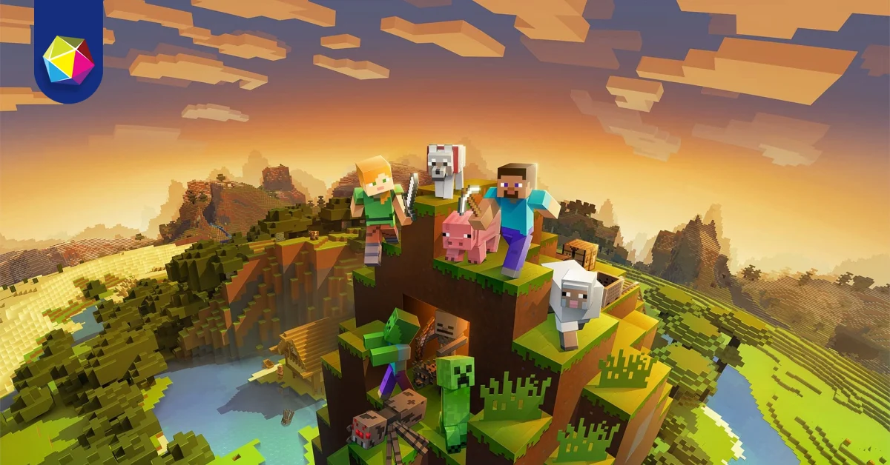
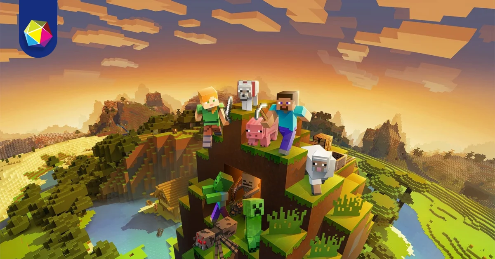
 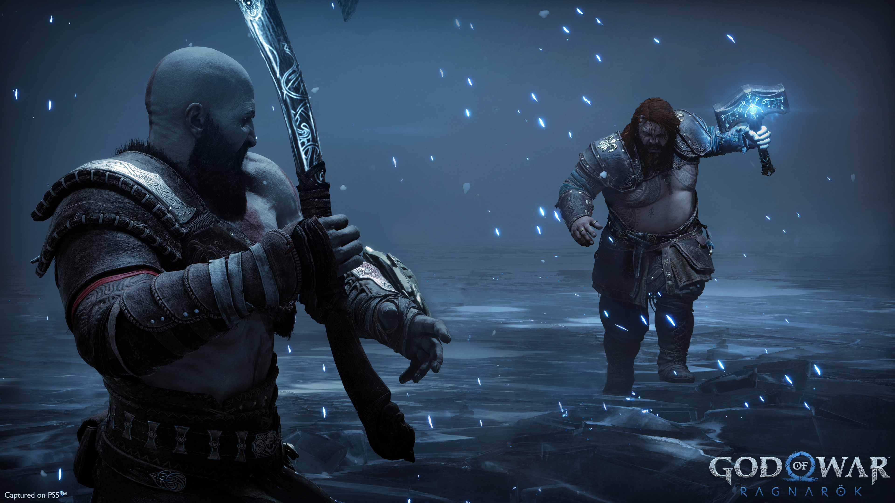
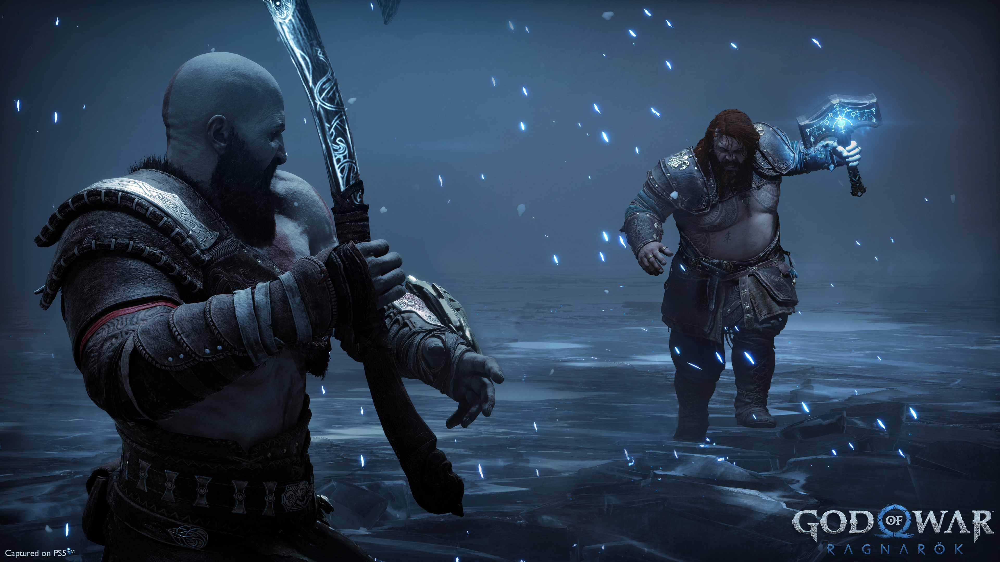

 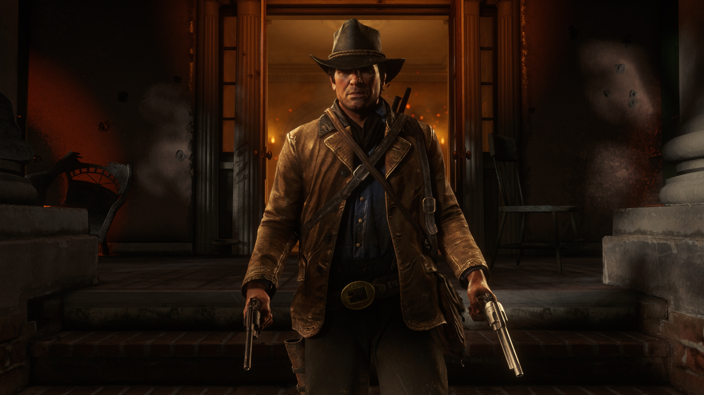
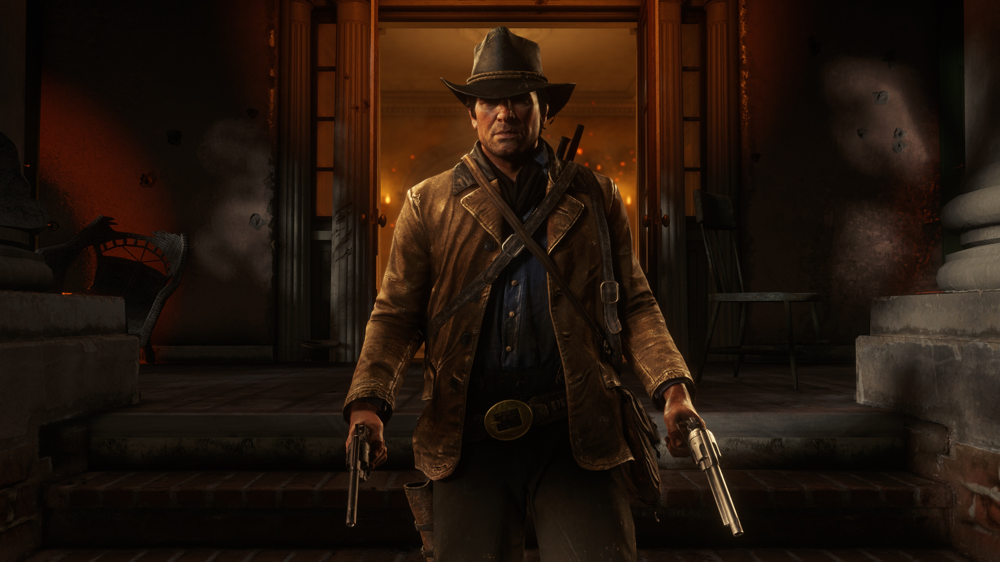
 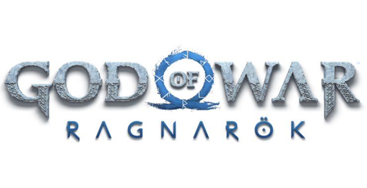
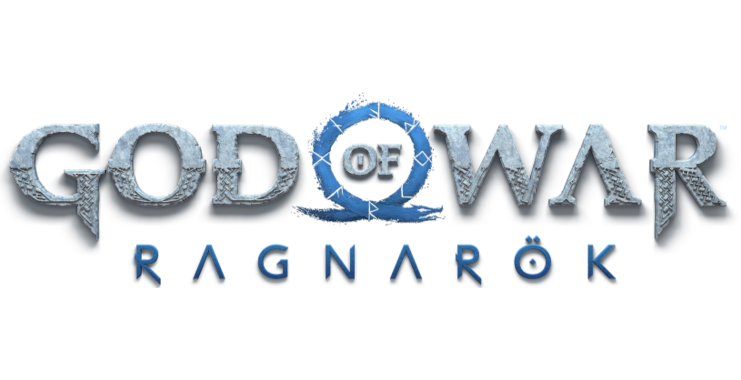
 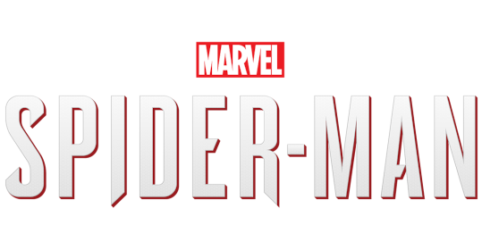
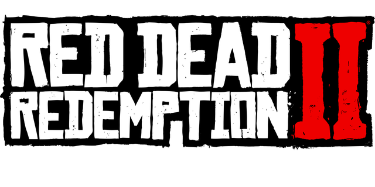
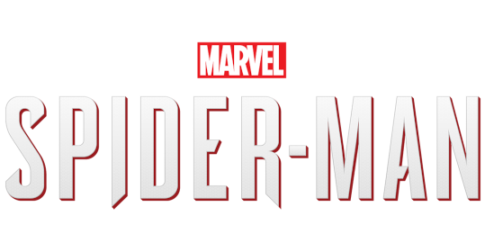
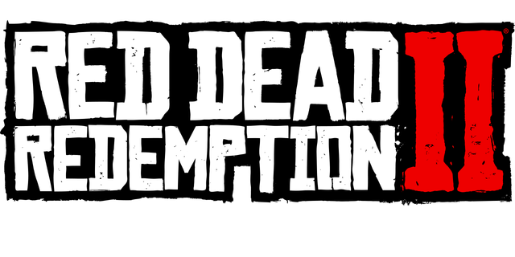
Ambientado cinco anos após os eventos de The Last of Us, o jogador assume o papel de duas protagonistas em um Estados Unidos pós-apocalíptico: Ellie, que busca por vingança após um evento traumático, e Abby, uma soldada que se envolve em um conflito entre uma milícia e um culto.
Minecraft é um jogo eletrônico lançado em 2009 que consiste em sobreviver em um mundo formado (majoritariamente) por blocos cúbicos. Steve, o personagem controlado pelo jogador, inicia o jogo em um ambiente repleto de árvores, montanhas, rios...
Horizon Forbidden West continua a história de Aloy meio ano após os eventos de Zero Dawn, uma jovem caçadora da tribo Nora enviada em uma missão para uma misteriosa fronteira que abrange Utah até a costa do Pacífico para encontrar a fonte de uma misteriosa praga que mata tudo.
Dentro de um gruta, Kratos e Atreus se refugiam do Fimbulwinter. O inverno que antecede o Ragnarök os cerca de inimigos que estão cada vez mais próximos. Para sobreviver a essa grande guerra, pai e filho precisam se decidir: Devem se esconder, mudando de esconderijo em esconderijo?
A história acompanha Jin Sakai, um samurai que precisa proteger a Ilha de Tsushima durante a primeira invasão mongol do Japão. Ele se vê dividido entre escolher seguir o código do guerreiro para lutar honradamente ou usar métodos práticos e desonrosos para subjugar os mongóis.
Peter Parker, um assistente de pesquisa de 23 anos que ganhou poderes super-humanos depois de ter sido mordido por uma aranha geneticamente modificada. Ele assumiu a identidade secreta de Homem-Aranha e passou a usar suas habilidades para proteger Nova Iorque.
Os jogadores assumem o papel de Arthur Morgan, um fora-da-lei no Velho Oeste americano. A história segue a gangue de bandidos liderada por Dutch van der Linde enquanto eles fazem um último esforço para sobreviver em um mundo que está mudando rapidamente.